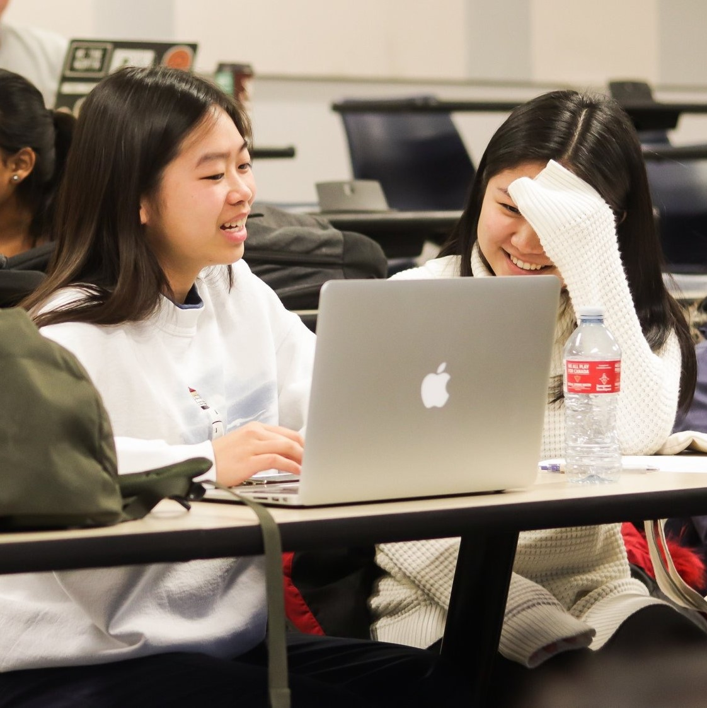
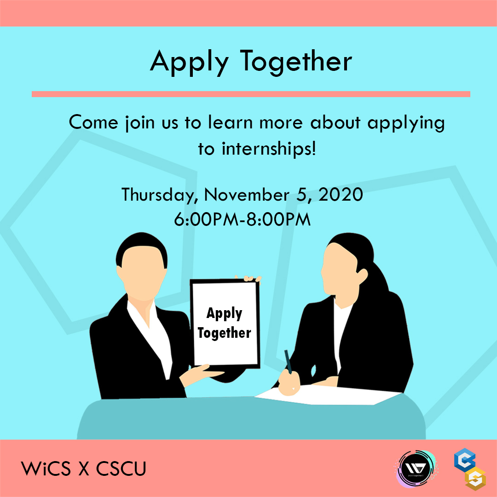
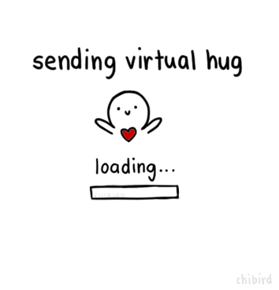
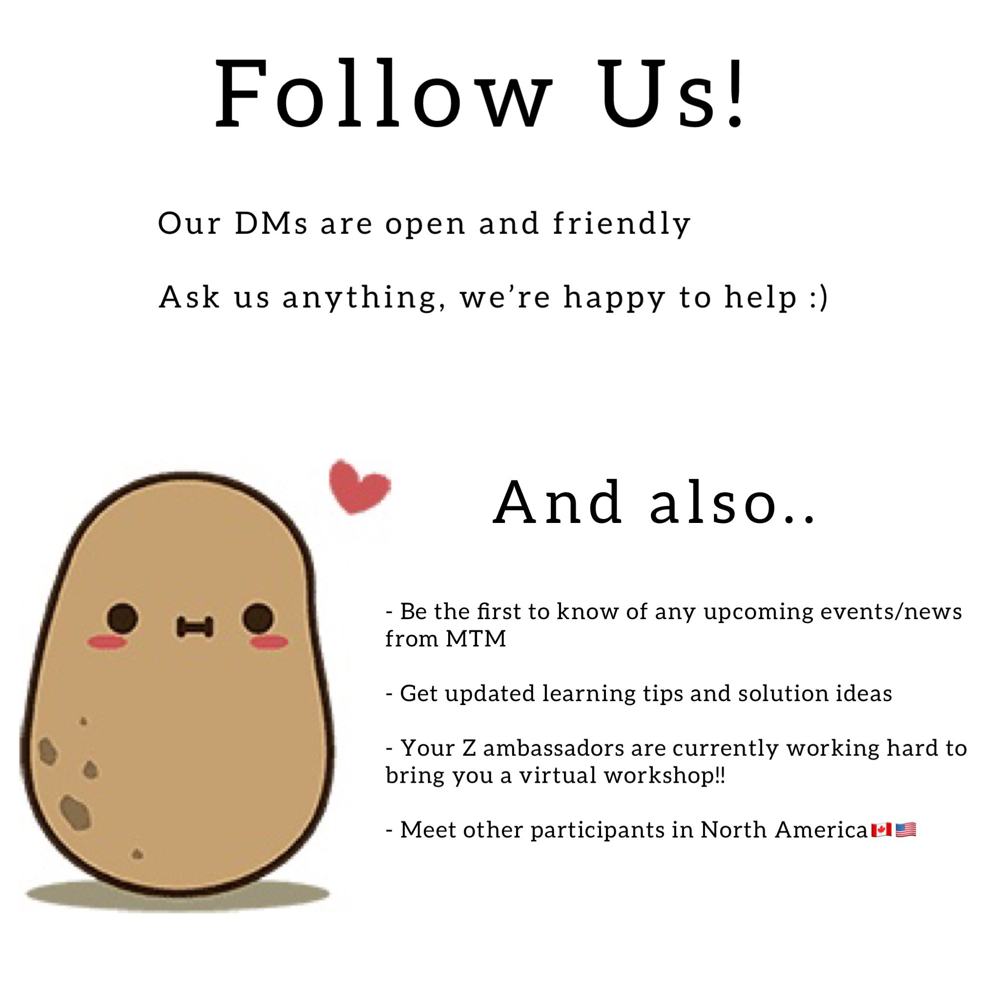
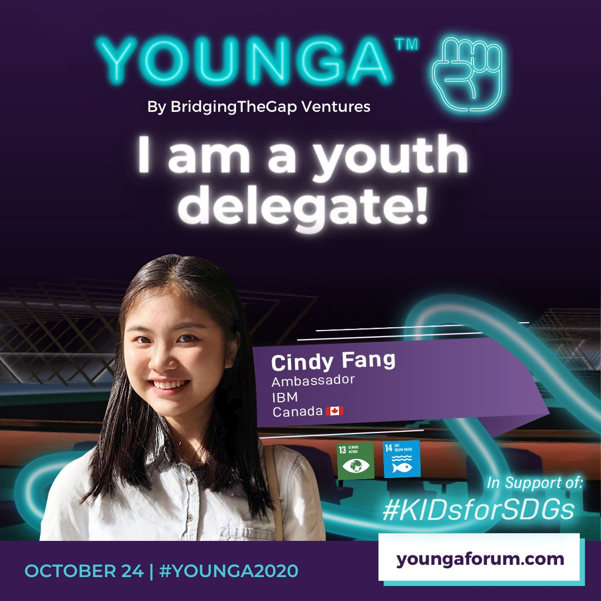

Hi! I'm Cindy Fang, currently a 2nd year Computer Science student at Ryerson University, in Toronto, Canada.
In Spring 2021, I will be interning at Bell Canada as a Network intern. After, I will continue my studies while pursuing a concentration in Software Engingeering and a minor in Econonmics. I'm expected to graduate in April, 2024 with a B.Sc. in Computer Science.
My interest in Computer Science started when I took a high school CS class and was immediately drawn to it. I loved using my creativity to create my own cool programs and be viewed by others like those "hackers" in the movies when I show my code. Now a full-time CS student 4 years later, I plan on diving deeper into Data Science and Machine Learning, while exploring Software Development as well.
I enjoy sharing my passion for Computer Science by speaking at webinars and in-class presentations on behalf of my program's Course Union and IBM Z. As the consecutive year representative, I aspire to be the voice for my peers while expanding their interests in Computer Science.

Outside of Computer Science, my interests and hobbies include playing piano, dancing, reading webtoons and novels, listening to K-pop, and photography.
The Ryerson CSCU is a group of dedicated student volunteers working to provide students the best experience at Ryerson CS.
Due to COVID-19, we are operating virtually this year. Our events will switch over to live broadcasting on Twitch and later uploaded on our YouTube channel.
In my first year in CS, I was the first year representative, responsible for the overall prosperity and satisfaction of my peers. This year, I'm the second year representative where I once again foster healthy connections between the students and professors, and take action over any issues or questions.
Outside my year rep role, I also engage in planning and hosting events that would best benefit the Ryerson CS community. Events I have taken part in hosting include the Why Ryerson Webinar, where I gave a presentation on why incoming students should choose Ryerson CS and my first year experience. I took part of the Frosh Q&A Webinar representing the CSCU to answer and discuss any CS related questions from the viewers.

Most recently, I co-hosted the Apply Together event where I gave tips on how to be co-op ready, presented feedback on resumes, and initiated conversations in breakout rooms.
The Ryerson Career and Co-op Centre (RCCC) works to provide students with career development resources through workshops, webinars, and one-on-one appointments.
As the Faculty of Science Campus Engagement Ambassador (FOS CEA), my work is to promote, plan, and present the resources and events of the RCCC.
I mainly communicate to science students through Class Talks, where I explain what the RCCC is, what we offer, and the importance of career advising from our team.
Outside on-screen presentations, I manage the FOS channel in the Ryerson Career Development Slack Workspace to keep students updated on career/co-op tips and upcoming dates.

As a peer mentor for 2 first year CS students, I work as their guide to navigating the school year. During our check-ins, I focus on answering questions, directing them to the best resource, and getting them involved in the Ryerson CS community.
Through my experience as a peer mentor, I learned ways to improve myself from helping others. By listening, discussing, and problem solving obstacles with my mentees, I discovered different approaches to target non-academic struggles. I have used these strategies to enhance my study habits and stress management.
As a ZAmbassador, I promote and teach others mainframe programming and its applications, mainly the Master the Mainframe global student contest (MTM).

I also manage the MTM North America Region Instagram account to keep followers updated on important dates and events, along with intersting mainframe facts.
For the IBM Z global conference, Z Day, I took on the position as the Marketing Co-chair, managing 40 members. As the Co-chair, I assigned promotion materials, tracker sheet and deadlines to the committee. Together, we brainstormed our target market and promotion strategies to meet our goal. As a result, we reached over 225 student groups and unions, local organizations, and influencers from all over the world to share the Z Day conference.

Attended YOUNGA Youth UN Assembly along with 1500 other delegates worldwide. Together, we discussed global challenges, exchanged ideas, and created solutions. I targeted the Climate Action (SDG 13) and Life Under Water (SDG 14) sustainability development goals. After the Assembly, I took part in developing the YOUNGA Youth Delegate Communiqué to take action on global issues and bring youth to action.